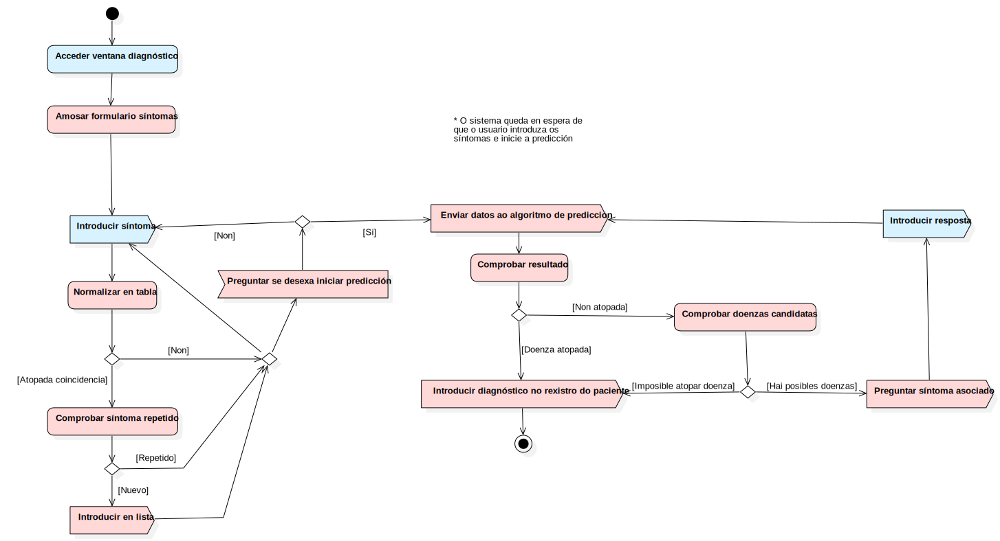

Iniciar diagnóstico
UMLActivity
ESaude
::
Use Case Model
::
Iniciar diagnóstico
Description
none
Diagrams

Iniciar Diagnostico
Nodes
InitialNode1
Introducir en lista
Recibir síntoma
Acceder ventana diagnóstico
Normalizar en tabla
DecisionNode1
ForkNode1
Predicción iniciada
Enviar datos ao algoritmo de prediccion
DecisionNode2
DecisionNode3
DecisionNode4
Consultar especialistas
Calcular medicamentos óptimos
Amosar lista
Action1
ForkNode2
ForkNode3
ActivityFinalNode1
ForkNode4
Action2
MergeNode1
Amosar formulario síntomas
Comprobar síntoma repetido
DecisionNode5
Introducir síntoma
Enviar datos ao algoritmo de prediccion
Comprobar resultado
Comprobar gravidade
Comprobar doenzas candidatas
Introducir diagnóstico no rexistro do paciente
Preguntar síntoma asociado
Recibir resposta
ActivityFinalNode2
Edges
(InitialNode1→Acceder ventana diagnóstico)
(Amosar formulario síntomas→ForkNode1)
(Introducir síntoma→Normalizar en tabla)
(Normalizar en tabla→DecisionNode1)
(ForkNode1→Introducir síntoma)
(ForkNode1→Predicción iniciada)
[Atopada coincidencia] (DecisionNode1→Comprobar síntoma repetido)
[*] (DecisionNode1→Recibir síntoma)
(Introducir en lista→Recibir síntoma)
(Predicción iniciada→Enviar datos ao algoritmo de prediccion)
(Comprobar resultado→DecisionNode2)
[Non atopada] (DecisionNode2→Comprobar doenzas candidatas)
[Doenza atopada] (DecisionNode2→Introducir diagnóstico no rexistro do paciente)
[*] (DecisionNode4→MergeNode1)
[Doenza grave] (DecisionNode3→Consultar especialistas)
[Imposible atopar doenza] (DecisionNode4→Introducir diagnóstico no rexistro do paciente)
[Doenza leve] (DecisionNode3→Calcular medicamentos óptimos)
(Action2→Action2)
[Hai posibles doenzas] (DecisionNode4→Preguntar síntoma asociado)
[*] (DecisionNode1→MergeNode1)
(Introducir en lista→MergeNode1)
(MergeNode1→Introducir síntoma)
(Acceder ventana diagnóstico→Amosar formulario síntomas)
(Comprobar síntoma repetido→DecisionNode5)
[*] (DecisionNode5→Introducir en lista)
[Repetido] (DecisionNode5→MergeNode1)
(Enviar datos ao algoritmo de prediccion→Comprobar resultado)
(Comprobar gravidade→DecisionNode3)
(Comprobar doenzas candidatas→DecisionNode4)
[Hai posibles doenzas] (DecisionNode4→Preguntar síntoma asociado)
(Preguntar síntoma asociado→Recibir resposta)
(Recibir resposta→Enviar datos ao algoritmo de prediccion)
(Introducir diagnóstico no rexistro do paciente→ActivityFinalNode2)
Properties
Name
Value
name
Iniciar diagnóstico
stereotype
null
visibility
public
isReentrant
true
isReadOnly
false
isSingleExecution
false
Owned Elements
Iniciar Diagnostico